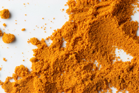
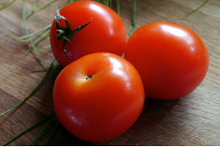
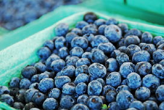

Can Anti-Inflammatory Foods Really Help?
Can certain foods take the heat out of inflammation, a condition now linked to a wide range of chronic health problems including heart disease and Alzheimer’s? Some headlines suggest combating it is as easy as sipping a daily cup of turmeric tea – but is it really? Sue Quinninvestigates.
Anti-inflammatory eating has now been added to an already overladen platter of popular diets. It’s an approach that focuses on foods widely claimed to combat a kind of inflammation linked to chronic health problems. Touted as the ‘next big thing’ by some health and wellbeing websites, anti-inflammatory diets are now the focus of cookbooks and extensive media coverage. The pungent orange spice turmeric, meanwhile, is the current ‘superfood’ of choice for celebrities because of its widely touted anti-inflammatory properties.
The hype surrounding anti-inflammatory foods stems from mounting scientific evidence linking inflammation with a disparate range of health problems including heart disease, Alzheimer’s, irritable bowel syndrome (IBS) and rheumatoid arthritis. Many claims are made on the internet and in the media about the curative properties of specific foods including turmeric, tomatoes, olive oil and oily fish.
Anti-inflammatory diet – say goodbye to those pains,” is the headline on one wellness website. “Eating anti-inflammatory foods – and avoiding inflammatory ones – can make weight-loss easier, slow down the aging process, and prevent disease,” claims another food website. “Turmeric’s key to disease reversal may be its ability to keep inflammation at bay,” says another. Is there any substance to the claims?
What is inflammation?
Prick your finger on a thorn and it might turn red, hot and swollen; this is the immune system triggering the inflammation that contains and repairs damage and infection. “Inflammation is normal. We need it and it’s self regulating,” says Phil Calder, professor of nutritional immunology at the University of Southampton. “But there are two types of conditions where inflammation seems to be acting against us instead of with us.”
The first, low-grade or ‘silent’ inflammation, is the kind we often don’t notice. Smoking, air pollution, stress, obesity and some foods can all be drivers of this type of inflammation, which is associated with many serious health problems. For example, inflammatory substances in the bloodstream can contribute to the build-up of fatty plaque on artery walls, increasing the risk of heart attack.
The second, high-grade inflammation, occurs in painful and debilitating conditions such as rheumatoid arthritis and some types of asthma and gut problems. In these cases, the inflammation releases substances into the bloodstream that cause damage elsewhere in the body. “A good example of this is inflammatory bowel disease, the sufferers of which show accelerated bone loss,” Prof Calder says.

Diet and inflammation
There’s good evidence that certain foods can have an impact on inflammation, according to scientists. And it appears celebrities slurping vats of turmeric tea might be on to something. “In studies, curcumin (a key substance in turmeric) showed strong anti-inflammatory and antioxidant effects. It’s been used on patients with conditions involving pain and inflammation,” Prof Calder says, but he adds that no robust clinical trials have yet been done and doctors have no idea what the correct intake is.
Calder says studies also suggest that eating generous quantities of oily fish might help people with rheumatoid arthritis, when included in their treatment, because it is rich in omega-3 fatty acids. “These give rise to chemicals that switch off inflammation,” he says. “An emerging idea is that inflammation is not only caused by bad triggering [when it happens for no apparent reason], but also when the body is unable to turn the inflammation switch off.”
For healthy people, an anti-inflammatory diet closely resembles the kind of eating pattern we’re all urged to adopt anyway, based on the Mediterranean approach, says Dr Fred Tabung, from the Harvard School of Public Health’s Department of Nutrition. “Specific dietary items such as wine, coffee, whole fruits and veg and some spices, have some anti-inflammatory effect, while saturated fats, trans-fats and processed/red meat have been shown to have pro-inflammatory properties,” he says. Foods deemed to be anti-inflammatory are those rich in protective antioxidants (which delay or prevent cell damage) and polyphenols (found in plants with antioxidant properties).
But Dr Tabung warns against eating large quantities of specific foods. “My advice is to eat anti-inflammatory foods in moderation as part of an overall balanced diet and not as isolated foods,” he says. In any event, avoiding foods that promote inflammation is as valuable as eating those that combat it.

No magic bullet
The problem for people suffering inflammation-related health issues is that diet isn’t the entire cure because inflammation isn’t the only contributing factor. What’s more, we all process nutrients differently, so what might ease inflammation in one person might have little effect in another.
Registered dietitian Gaynor Bussell says it’s now believed our gut bacteria can affect how well we absorb nutrients, including anti-inflammatory compounds. “Poor gut micro-flora might influence how these are processed once they get into the body,” she says. “But generally, keeping your weight down is one of the best anti-inflammatory things you can do.”
The bottom line
For some inflammation-related conditions, there’s good evidence that certain foods might be helpful as part of the treatment. For healthy people, it’s better to adopt a Mediterranean approach rather than eating large quantities of anti-inflammatory foods – and avoiding foods that cause inflammation is a crucial part of the equation. That cup of turmeric tea is unlikely to be the whole solution.
Including anti-inflammatory foods in moderation, as part of an overall balanced diet, is the approach recommended by the Harvard School of Public Health. Anti-inflammatory foods include…
- Nuts such as almonds, walnuts and pistachios
- Olive oil
- Oily fish such as salmon, mackerel, tuna and sardines
- Green leafy vegetables, such as spinach and cabbage
- Tomatoes
- Fruit high in polyphenols, such as strawberries, blueberries, cherries, red grapes and oranges
- Spices such as turmeric and ginger